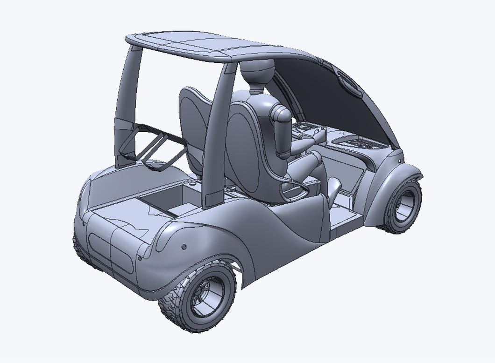
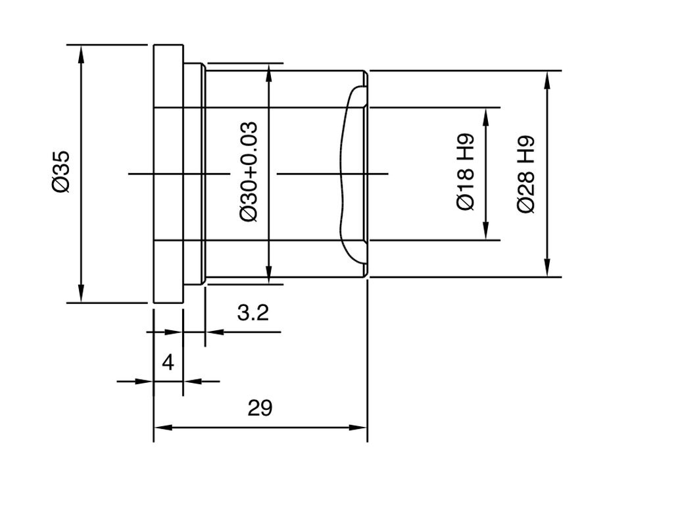

Open SolidWorks parts and assemblies and AutoCAD drawings as they are. No export step.


Every review starts with “can you export it to STEP?” Someone has to open the CAD program, remember the export settings and send the file again after every change. Drawings arrive as DWG files that half the team cannot open.
Put a SolidWorks part (.SLDPRT), a complete assembly (.SLDASM) or an AutoCAD drawing (.DWG) on the canvas, next to your notes and everything else. Ensemble reads the file itself: neither SolidWorks nor AutoCAD is needed.
Parts and assemblies open as 3D cards: orbit, hide or isolate sub-assemblies, pin comments to the exact spot and run the analysis. A DWG opens like a PDF, with crisp vector lines you can zoom into, and its dimensions and notes stay real text.
A DWG opens as a drawing card, so the AI can read its dimensions and propose a first 3D model next to it, as it does for PDF drawings.
Today Ensemble shows the geometry of SolidWorks files, not their colors or materials. In DWG, hatches, single-line text and line styles are not drawn yet, and other DWG versions must be saved in the AutoCAD 2013 format first.
Use it free on your own devices, and bring your team in when you need to.